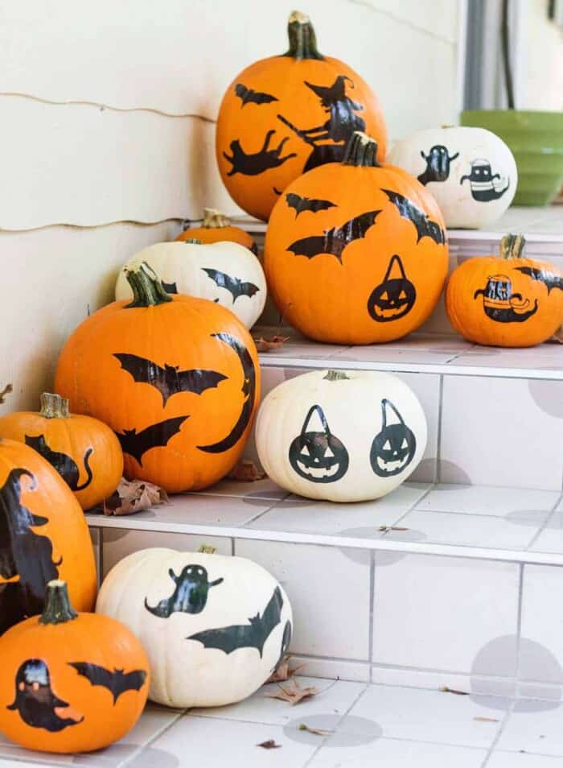
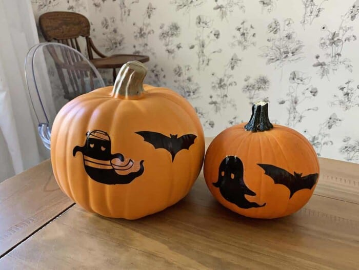
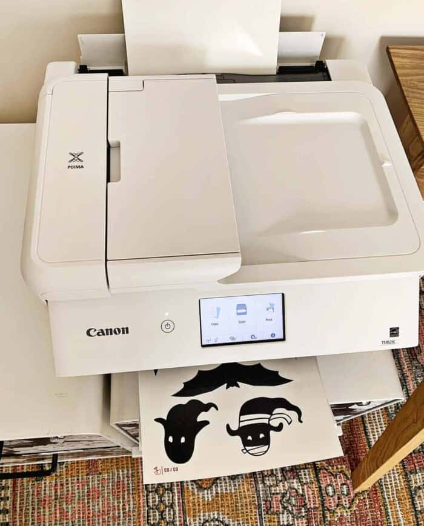
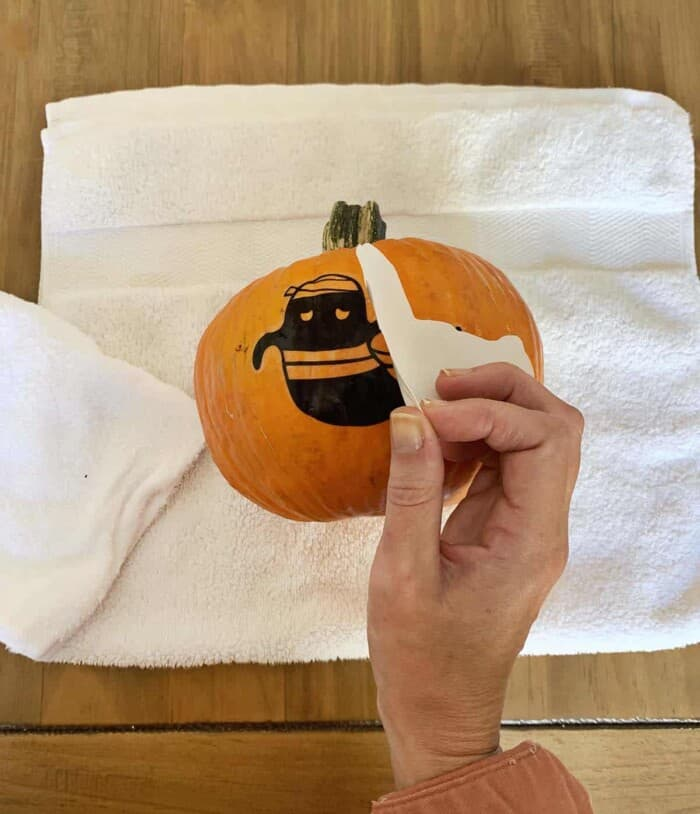
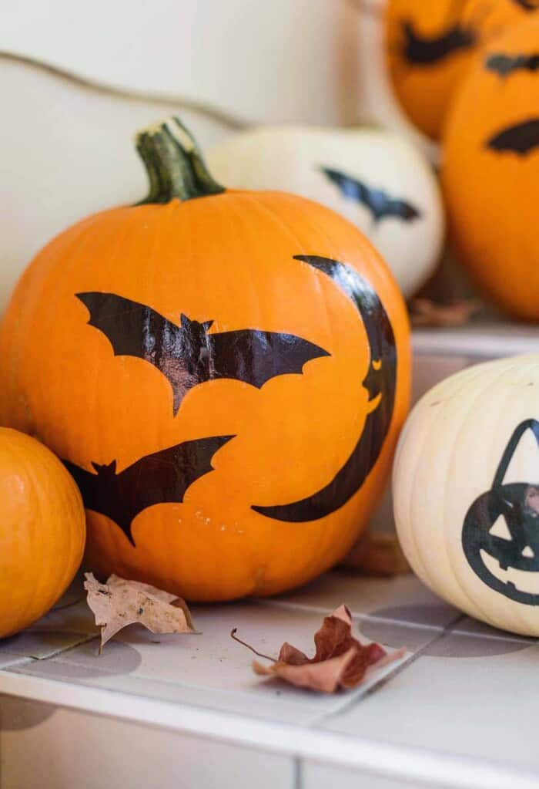

Believe it or not, sometimes I don't get around to decorating pumpkins each year. (Audible gasp from the imaginary audience in my head.)
I know, I know. Don't get me wrong, I always find time to put out a few pumpkins on my porch or around my home. But this year I made time to decorate a whole bunch for my porch! I love how they turned out and I'm excited to share this technique with you.
There are many ways to decorate pumpkins, and probably carving jack-o'-lanterns is what comes to mind for most people. While I do love a carved pumpkin, this is a no-carve pumpkin decor idea. No-carve pumpkin ideas are really great alternatives because they are easier to accomplish (no knives or fancy skills required), plus they are less messy.
For my pumpkins, I experimented with using printable (inkjet) tattoo paper with spooky designs I printed from the Canon Creative Park app. I love the results!
The tattoo paper works a little better on the surface of pumpkins over sticker paper or thicker decals, because it is thinner and more easily contours to the surface (like it would to your skin if you were using it as a temporary tattoo).
You can absolutely create your own designs for these, but I went the easy route and simply used a cute design from the Canon Creative Park app. If you've never used the app before, try it—it's really fun and has a LOT of different options, including seasonal designs. It's a free app, and there are all sorts of paper projects you can print directly from your phone.
I tested this technique on both faux pumpkins as well as real pumpkins. Although it did work on faux pumpkins (on the right) I think the paper worked a little better with the surface of the real pumpkin, on the left. But both worked, so it’s up to you what you prefer.
Supplies
- PIXMA TS9521C printer + Canon Creative Park app
- temporary tattoo paper (inkjet compatible)
- scissors
- washcloth or clean rag and water
- pumpkins (faux or real)
Steps
- Print your designs to the tattoo paper. If you are using a design with text, keep in mind you will want to mirror the design before printing.
- Cut out the designs.
- Peel back the plastic coating and place on the pumpkin, press to stick.
- Use a damp washcloth or rag to lightly blot the paper. You do not need the rag to be soaking wet or dripping—just damp. Peel back the paper to reveal your design. 
- Repeat for all designs and pumpkins. 
One thing to keep in mind: Temporary tattoo paper is meant to be just that—temporary. So just like taking a shower can wash off a temporary tattoo, if you place your pumpkins outside and they are exposed to rain or other precipitation, they can bleed or the design can even completely wash off.
So, it is better to display somewhere with an overhang, or indoors. Thanks for letting me share! xo. Emma


Comments (89)
Jessica Wells | October 12, 2023
Love it! I've been trying out a few of your tips, and your guide made it so much easier.
Ryan Luvert | September 8, 2024
Your blog is amazing. Love to see more!
Alexander Brett | September 21, 2023
Great content! Would love to see more Guides.
Leave a Comment